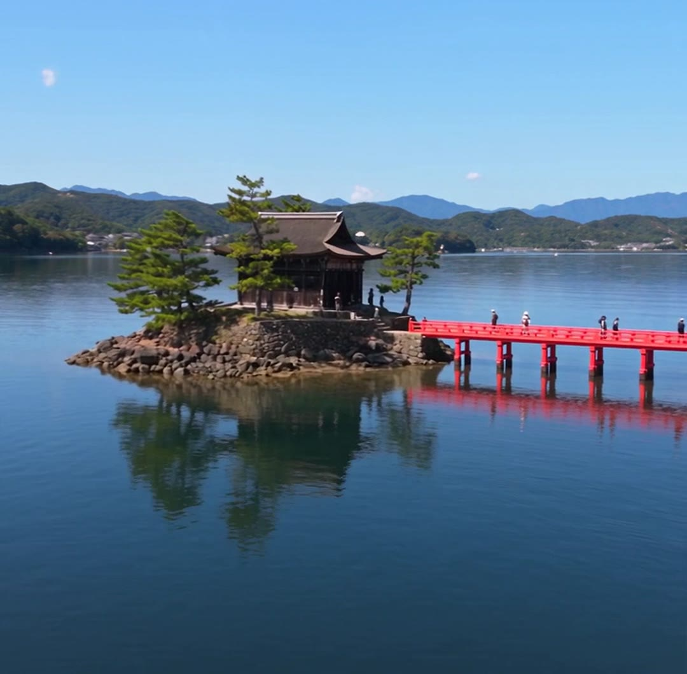
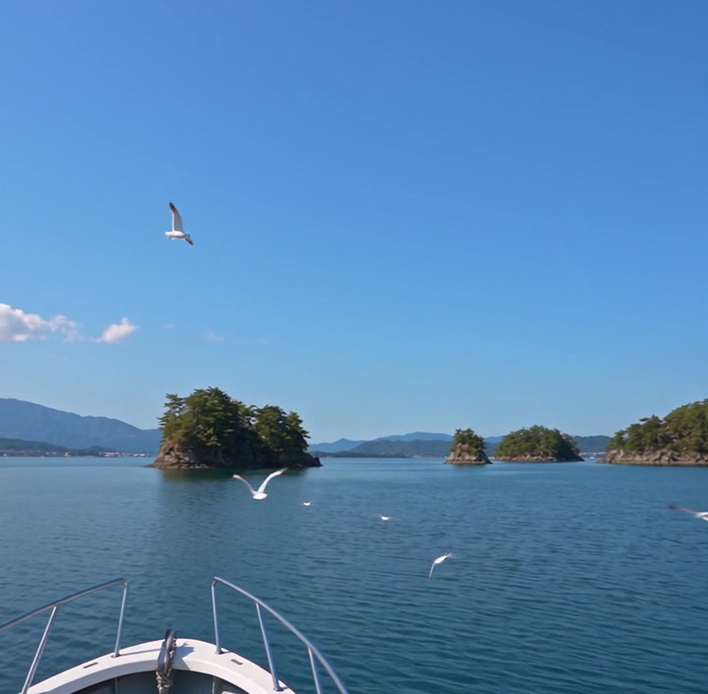
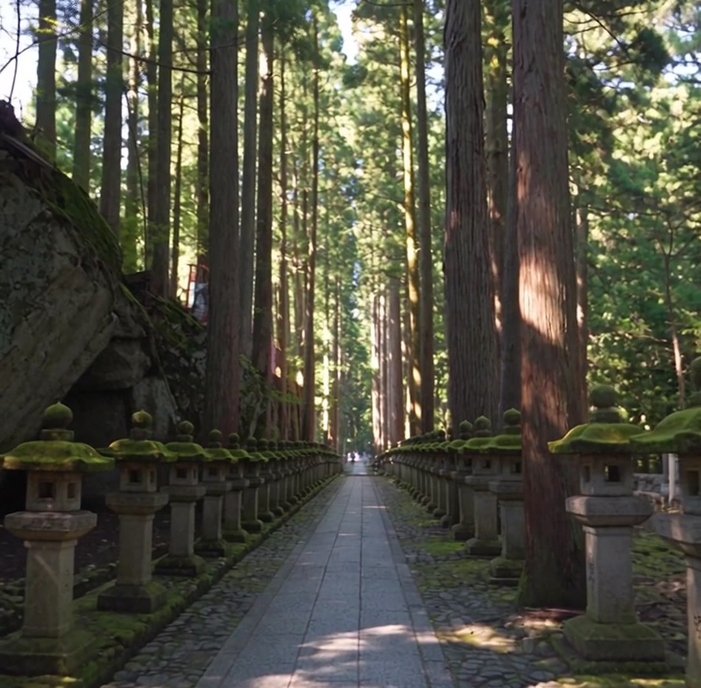
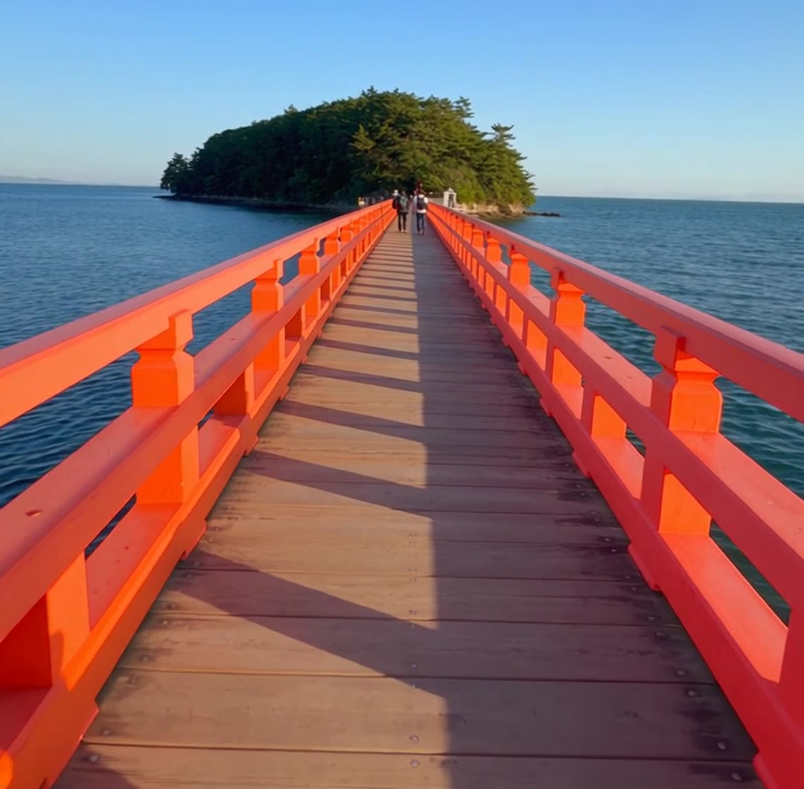
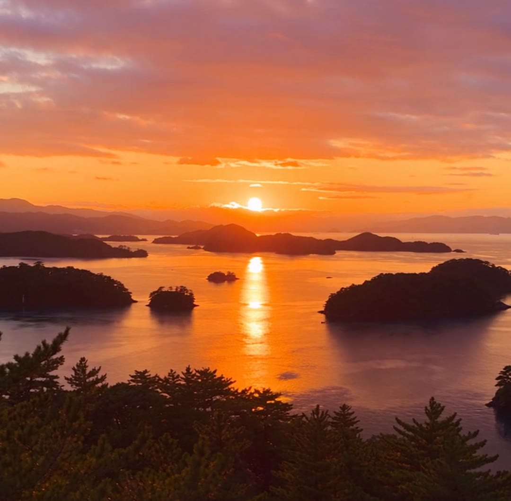
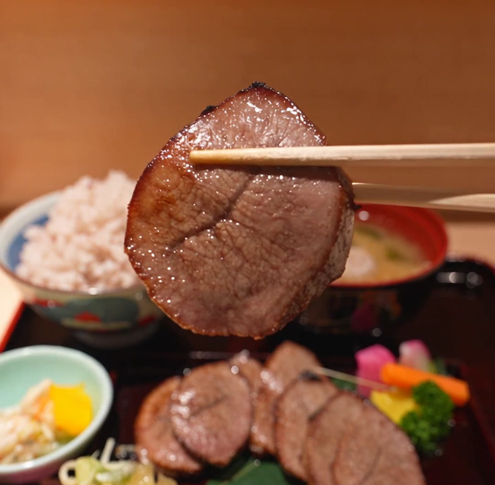

일본 3대 절경을 품은 곳,
미야기 마쓰시마
도호쿠의 관문 센다이에서 전철로 40분. 260여 개 소나무 섬이 떠 있는 마쓰시마를 하루에 돌고, 저녁엔 센다이 규탄으로 마무리하는 코스예요.
📢 이 페이지에는 제휴 링크가 포함될 수 있어요. 링크로 예약하시면 1분여행이 일정 수수료를 받을 수 있지만, 예약하시는 가격은 같아요.
한눈에 보기
만족도2026 자란 조사 종합 만족도 공동 8위
추천 일정센다이 1박 + 마쓰시마 당일치기
가는 법인천에서 센다이 직항 약 2시간
마쓰시마센다이역 → JR 센세키선 마쓰시마카이간역 약 40분
꼭 먹을 것센다이 규탄 (숯불 소 혀 구이)
💡 내릴 역을 꼭 확인하세요. 관광지와 가까운 곳은 센세키선 마쓰시마카이간역이에요. 도호쿠 본선 마쓰시마역에서 내리면 훨씬 더 걸어야 해요.
마쓰시마 하루 코스
- 08:30고다이도
바다 위 작은 섬의 불당. 1604년 다테 마사무네가 세운 도호쿠에서 가장 오래된 모모야마 양식 건물이에요. 무료 · 8:30~17:00
- 09:30마쓰시마 유람선 (니오마루 코스)
고다이도 옆 관광 부두에서 출발해 섬 사이를 약 50분 동안 돌아요. 성인 1,500엔, 2층 그린석은 추가 요금. 인터넷 예약 할인이 있어요
- 11:30즈이간지
다테 가문의 보리사로 본당이 국보예요. 2026년 4월부터 성인 1,000엔. 11월은 16시에 닫으니(접수 15:30) 오전에 가는 걸 추천해요
- 14:00후쿠우라바시 → 후쿠우라섬
252m 길이의 빨간 다리를 건너 섬 산책. 통행료 성인 200엔 · 3~10월 8:30~17:00, 11~2월 ~16:30
- 16:30언덕 위 전망대 → 석양
섬들 사이로 해가 지는 걸 보고 센다이로 돌아가 규탄 저녁





🍽️ 맛집 · 센다이 규탄
센다이 고쿠분초
아지 타스케 (旨味 太助)
1948년부터 이어진, 센다이 규탄 구이의 원조로 알려진 가게. 11:30~19:45(재료 소진 시 종료) · 월요일 휴무 · 규탄 정식 1,700엔~
센다이 이치반초
아지노 규탄 키스케 이치반초점
키스케가 시작된 가게. 소금·양념·된장 맛 중 고를 수 있어요. 11:30~14:00, 17:30~21:00(목요일은 점심만) · 정식 1,980엔
센다이역 근처
규탄 스미야키 리큐 니시구치 본점
센다이역에서 걸어서 5분. 점심 11:30~15:00, 저녁 17:00~22:30 · 연중무휴

🏨 숙소
마쓰시마에서 1박한다면
※ 운영 시간과 요금은 현지 사정으로 바뀔 수 있어요. 방문 전에 공식 정보를 한 번 더 확인하세요. 사진은 AI로 만든 영상의 장면이에요.
← TOP 10 목록으로